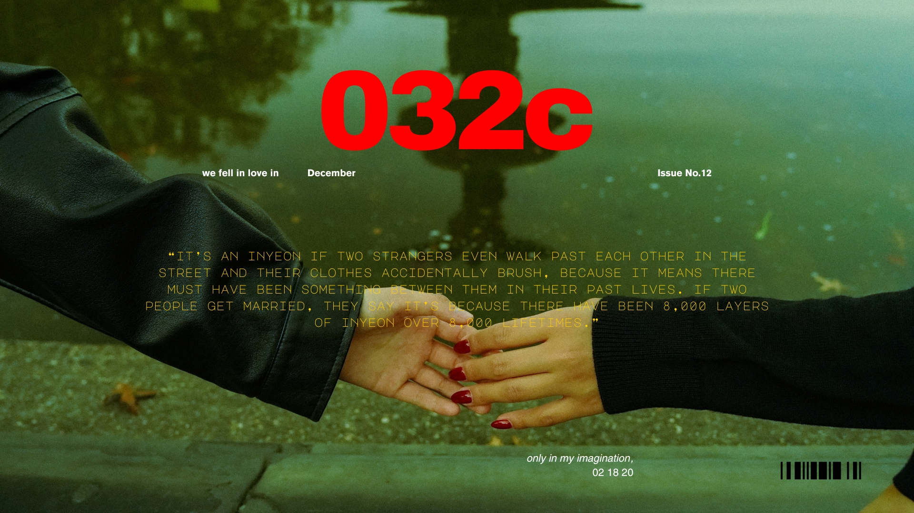

We Become Stories
Expressing myself has never been easy.
For as long as I can remember, I have constantly tried to find a home in words.
It’s like trying to find my way through a maze of words that refuse to quiet, or sometimes, there are just no words at all.
Silence, as terrifying and scary as it might seem, carries such heaviness, bearing upon one's heart, making every breath become a struggle.
Like drowning, pressure keeps pulling you deeper and control vanishing like the last breath.
As you sink further, the cries within fade, choked in the darkness below,
until life and death are no longer controllable.


I remember the endless fear of chasing perfection, a pursuit I believed held promises to happiness, but only found brief moments of satisfaction and a life that felt like one failure after another.
My obsession with perfection comes from the plain reality of knowing,
deep down,
that I am full of flaws and imperfections.
I fear that no one will love me for my insecurities, like my fears expose me completely, as fragile as glass.

One of the deepest ironies of being human is our tendency to regret it only when the moment has permanently escaped us,
realizing too late that
life
itself
was just a momentary speck.

I think of you as inyeon, the bond that drew our lives together, even if it was only for a brief moment.
With you, the world felt smaller, like fate had folded it so that it was just us.
I fell for you little by little, though fear kept me from holding on.
Now you are gone, but
the ache still dwells inside me,
soft as a song I can't turn off.
If inyeon is real, I hope the thread will lead me back to you,
just like it did
— someday.

"Someday"

In the end, all I have are memories: moments I still ache for, my traumas, my melancholy, and the happy times I wish I could hold again. They stay with me, like pages I keep rereading.
Maybe that’s what it means to become stories: we live on in the hearts that remember us.
And I hope I’ll be remembered with love and admiration, even as I wrestle with whether I want remembrance or simply fear being forgotten, abandoned.